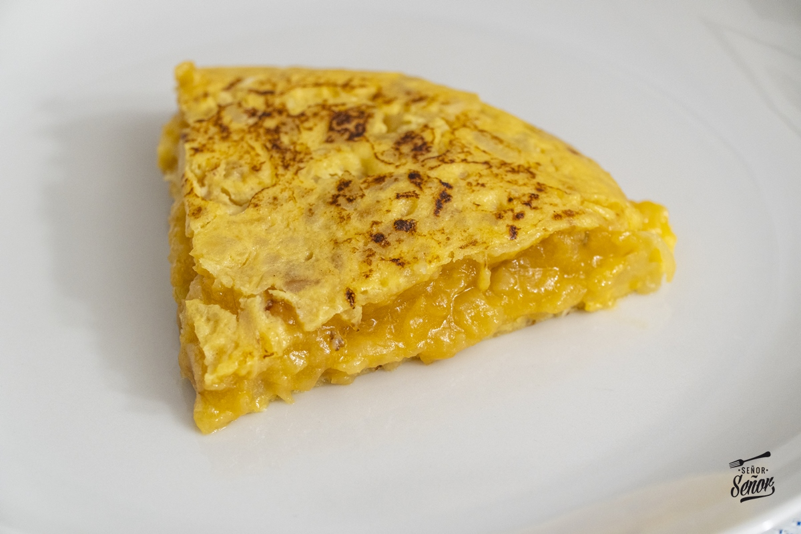
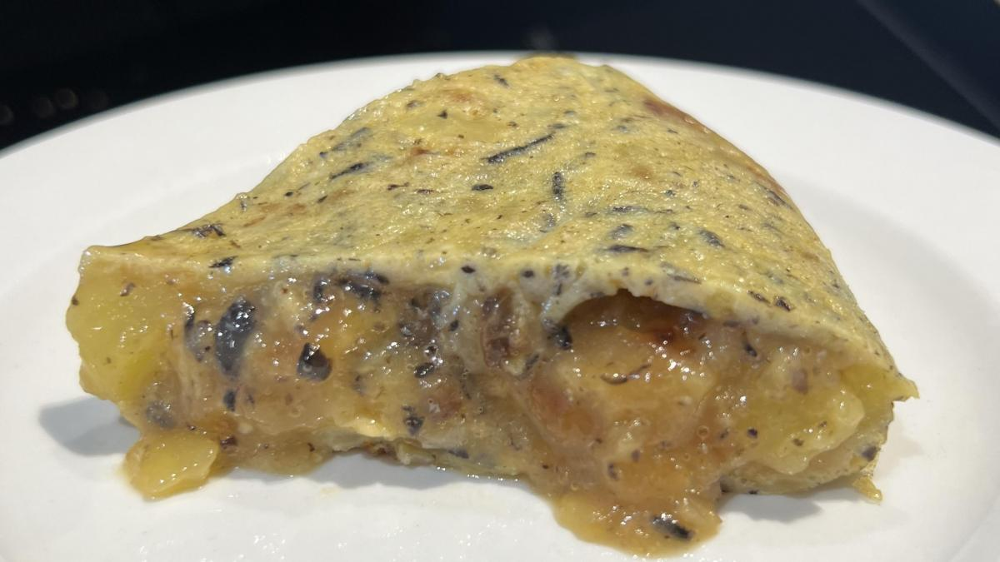
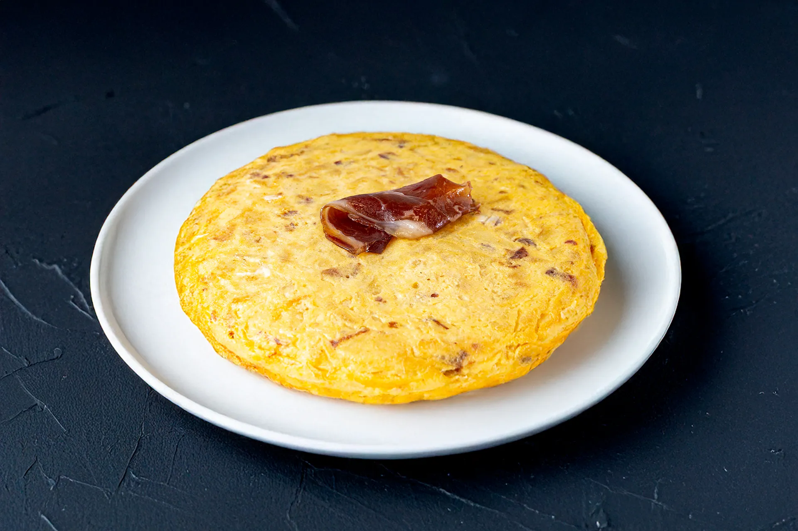
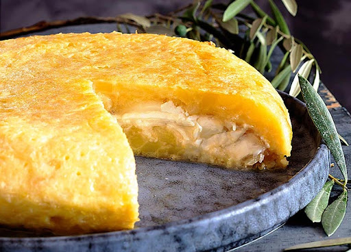
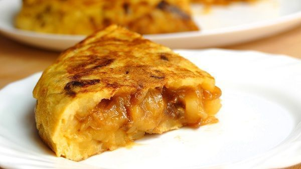

La Clásica
Tortilla tradicional con patata y cebolla, esponjosa y sabrosa.
12€Desliza horizontalmente para descubrir nuestros sabores

Tortilla tradicional con patata y cebolla, esponjosa y sabrosa.
12€
Tortilla cremosa con un delicado toque de trufa negra, elegante y aromática.
16€
Tortilla jugosa con queso de cabra fundido y lonchas de cecina.
15€
Tortilla con jamón y queso fundido, un clásico que nunca falla.
14€
Tortilla con atún y un toque de cebolla, sencilla y sabrosa.
14€
Tortilla con cebolla caramelizada, dulce y muy aromática.
14€